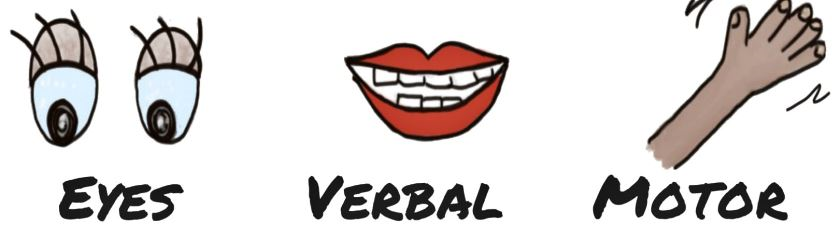

*This tool does not provide clinical knowledge. It is intended for research purposes only.*
| This will automatically locate you to your current donor service area (DSA) for your Organ Procurement Organization (OPO) | |
| Click to reveal the OPOs clinical triggers *please zoom in on more crowded states for clarity* | |
|  | Indicates an OPO that utilizes Glasgow Coma Scale (GCS) in their clinical triggers (38 OPOs total) |
| Indicates an OPO that utilizes brainstem reflexes in their clinical triggers (30 OPOs total) | |
| Indicates a top 10 performing OPOs per Tier via Centers for Medicare and Medicaid Services (CMS) 2021 rankings *for more information, please visit https://www.opodata.org/* |
1. Legacy of Hope (prior to January of 2022): Call AOC within ONE HOUR if the ventilated patient exhibits THREE of the following: pupillary response, cough, corneal reflex, gag, response to painful stimuli, spontaneous respirations OR withdrawl of life sustaining therapies (including pressor support) is being considered and death is likely to occur. *Hypothermia protocol patients may meet clinical triggers.
2. Arkansas Regional Organ Recovery Agency: This OPO did not respond concerning historical clinical triggers despite multiple attempts to contact this OPO.
3. Donor Network of Arizona: This OPO did not respond concerning historical clinical triggers despite multiple attempts to contact this OPO.
4. Donor Network West: This OPO did not respond concerning historical clinical triggers despite multiple attempts to contact this OPO.
5. Sierra Donor Services: Sierra Donor Services reports use of the the current clinical triggers since January of 2023. This OPO did not respond concerning historical clinical triggers despite multiple attempts to contact this OPO.
6. OneLegacy: This OPO did not respond concerning historical clinical triggers despite multiple attempts to contact this OPO.
7. Lifesharing: This OPO did not respond concerning historical clinical triggers despite multiple attempts to contact this OPO.
8. Donor Alliance: Donor Alliance reported use of the current clinical triggers since 2013.
9. Our Legacy: Our Legacy reports use of the current clinical triggers since 2020.
10. Life Alliance Organ Recovery Agency: This OPO did not respond concerning historical clinical triggers despite multiple attempts to contact this OPO.
11. LifeQuest: LifeQuest reports use of the current clinical triggers since 2006.
12. LifeLink of Florida: This OPO did not respond concerning historical clinical triggers despite multiple attempts to contact this OPO.
13. LifeLink of Georgia: LifeLink of Georgia reported use of the current clinical triggers since September of 2022.
14. Legacy of Life Hawaii: This OPO did not respond concerning historical clinical triggers despite multiple attempts to contact this OPO.
15. Iowa Donor Network: Iowa Donor Network reports use of the current clinical triggers since 2013.
16. Gift of Hope: Gift of Hope reports use of the current clinical triggers since January of 2022.
17. Indiana Donor Network: This OPO did not respond concerning historical clinical triggers despite multiple attempts to contact this OPO.
18. Kentucky Organ Donor Affiliates: This OPO did not respond concerning historical clinical triggers despite multiple attempts to contact this OPO.
19. Louisiana Organ Procurement Agency: This OPO did not respond concerning historical clinical triggers despite multiple attempts to contact this OPO.
20. New England Donor Services: New England Donor Services reports use of the current clinical triggers since 2019.
21. Infinite Legacy: Infinite Legacy reports use of the current clinical triggers since 2023.
22. Gift of Life Michigan: This OPO did not respond concerning historical clinical triggers despite multiple attempts to contact this OPO.
23. LifeSource: LifeSource reports use of the current clinical triggers since 2020.
24. Mid-America Transplant Services: Prior to 2021, Mid-America Transplant Services reports their clinical triggers were: GCS >5 AND absence of 2 or more brainstem reflexes.
25. Mississippi Organ Recovery Agency: This OPO did not respond concerning historical clinical triggers despite multiple attempts to contact this OPO.
26. Midwest Transplant Network: Midwest Transplant Network reports use of the current clinical triggers since 2021.
27. LifeShare Carolinas: This OPO did not respond concerning historical clinical triggers despite multiple attempts to contact this OPO.
28. HonorBridge: This OPO did not respond concerning historical clinical triggers despite multiple attempts to contact this OPO.
29. Live On Nebraska: Live on Nebraska reports use of the current clinical triggers since 2017. The only difference between now and then was we asked for a call if there was a change to the DNR status or considering comfort care.
30. New Jersey Sharing Network: New Jersey Sharing Network reports use of the current clinical triggers since 2020.
31. New Mexico Donor Services: New Mexico Donor Services reports use of the current clinical triggers since 2023.
32. Nevada Donor Services: This OPO did not respond concerning historical clinical triggers despite multiple attempts to contact this OPO.
33. Center for Donation and Transplant: This OPO did not respond concerning historical clinical triggers despite multiple attempts to contact this OPO.
34. Finger Lakes Donor Recovery Network: This OPO did not respond concerning historical clinical triggers despite multiple attempts to contact this OPO.
35. LifeOn NY: This OPO did not respond concerning historical clinical triggers despite multiple attempts to contact this OPO.
36. Upstate NY Transplant Services: Upstate NY Transplant Services reports use of the current clinical triggers since 2010.
37. LifeBanc: This OPO did not respond concerning historical clinical triggers despite multiple attempts to contact this OPO.
38. LifeConnection: This OPO did not respond concerning historical clinical triggers despite multiple attempts to contact this OPO.
39. LifeLine of Ohio: This OPO did not respond concerning historical clinical triggers despite multiple attempts to contact this OPO.
40. LifeCenter Organ Donor Network: This OPO did not respond concerning historical clinical triggers despite multiple attempts to contact this OPO.
41. LifeShare of Oklahoma: This OPO did not respond concerning historical clinical triggers despite multiple attempts to contact this OPO.
42. Cascade Life Alliance: This OPO did not respond concerning historical clinical triggers despite multiple attempts to contact this OPO.
43. Gift of Life: This OPO did not respond concerning historical clinical triggers despite multiple attempts to contact this OPO.
44. CORE: CORE reports use of the current clinical triggers since 2020. Prior, the clinical triggers were GCS 5 or less, irreversible brain damage, ventilator dependent, and end of life decisions being made.
45. LifeLink of PR: This OPO did not respond concerning historical clinical triggers despite multiple attempts to contact this OPO.
46. We Are Sharing Hope SC: We Are Sharing Hope SC reports use of the current clinical triggers since August of 2022.
47. Tennessee Donor Services: Tennessee Donor Services reports use of the current clinical triggers since March of 2023.
48. Mid-South Transplant Foundation: This OPO did not respond concerning historical clinical triggers despite multiple attempts to contact this OPO.
49. LifeGift: This OPO did not respond concerning historical clinical triggers despite multiple attempts to contact this OPO.
50. Texas Organ Sharing Alliance: Texas Organ Sharing Alliance reports use of the current clinical triggers since 2022. Prior, the clinical triggers were neuro insult, ventilated, GCS of 5 or less (or 3 absent brainstem reflexes).
51. Southwest Transplant Alliance: Southwest Transplant Alliance reports use of the current clinical triggers since 2021.
52. DonorConnect: This OPO did not respond concerning historical clinical triggers despite multiple attempts to contact this OPO.
53. LifeNet Health: This OPO did not respond concerning historical clinical triggers despite multiple attempts to contact this OPO.
54. LifeCenter Northwest: LifeCenter Northwest reports use of the current clinical triggers since 2021.
55. UW Health Organ and Tissue Donation: UW Health Organ and Tissue Donation reports use of the current clinical triggers since 2006.
56. Versiti Wisconsin Inc: This OPO did not respond concerning historical clinical triggers despite multiple attempts to contact this OPO.